Paso 4 de 12 · Casos de uso
Las acciones de cada persona
Cómo se relacionan las personas con la aplicación.
Comunicación entre estudiantes
Estos recorridos concretan cómo un estudiante de la universidad puede contactar a sus compañeros, participar en grupos e intercambiar avances. Cada caso explica un objetivo y sus alternativas; los detalles internos están en P7.
Un recorrido por caso de uso
Cada figura muestra una tarea por separado. Las columnas identifican a los participantes; los pasos numerados y las flechas indican el recorrido esperado. Las alternativas aclaran qué debe pasar si no se cumplen las condiciones.
CU-01 · Registrarse
Participantes: Persona visitante, Sistema.

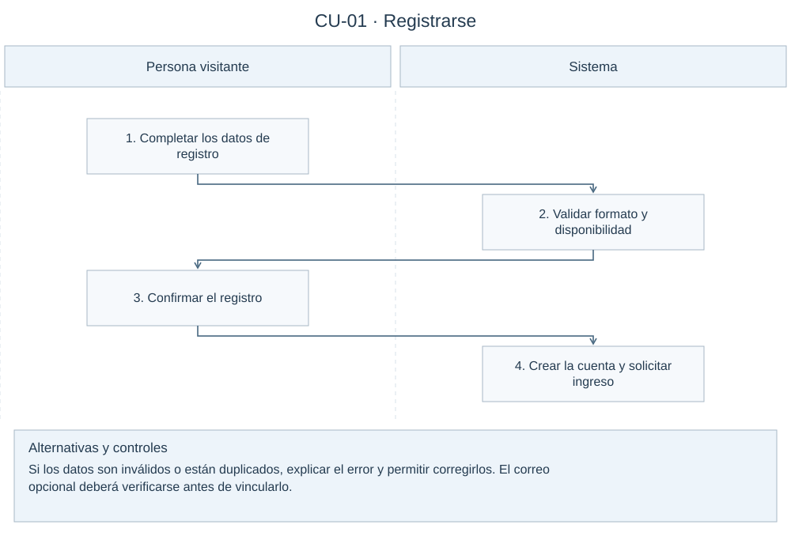
Ampliar el recorridoSi los datos son inválidos o están duplicados, explicar el error y permitir corregirlos. El correo opcional deberá verificarse antes de vincularlo.
CU-02 · Iniciar sesión
Participantes: Persona registrada, Sistema.

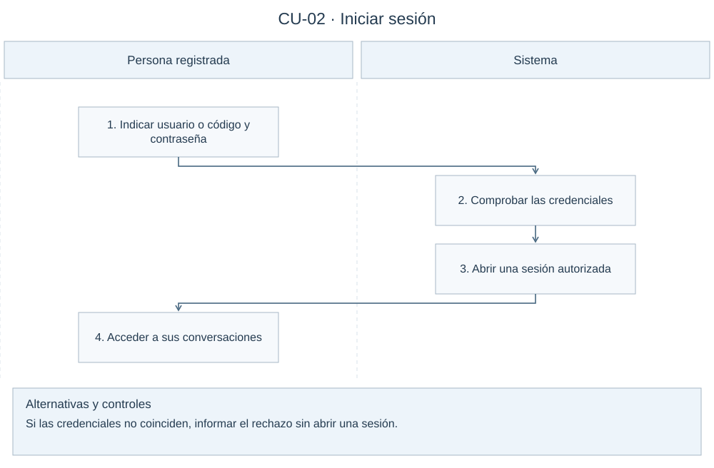
Ampliar el recorridoSi las credenciales no coinciden, informar el rechazo sin abrir una sesión.
CU-03 · Iniciar chat privado
Participantes: Persona registrada, Sistema.

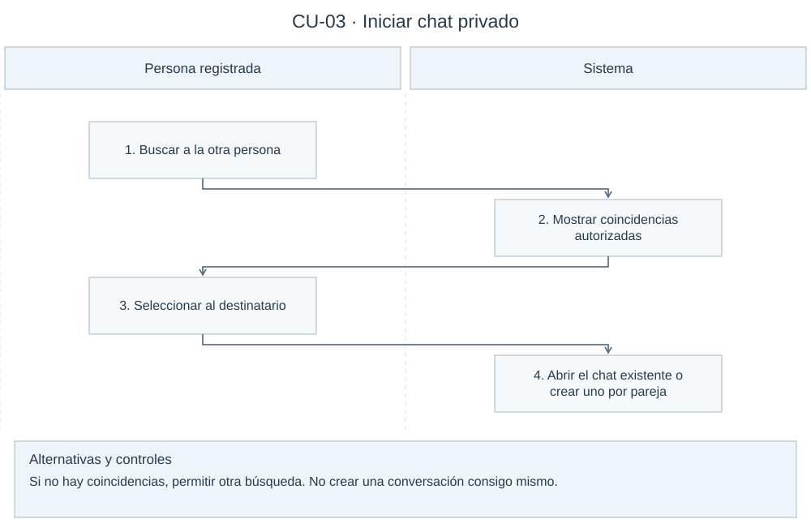
Ampliar el recorridoSi no hay coincidencias, permitir otra búsqueda. No crear una conversación consigo mismo.
CU-04 · Consultar conversaciones
Participantes: Persona registrada, Sistema.

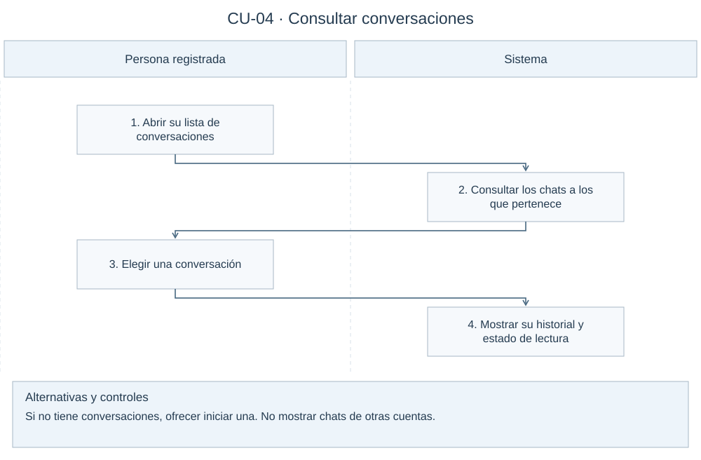
Ampliar el recorridoSi no tiene conversaciones, ofrecer iniciar una. No mostrar chats de otras cuentas.
CU-05 · Enviar mensaje
Participantes: Persona emisora, Sistema, Persona destinataria.

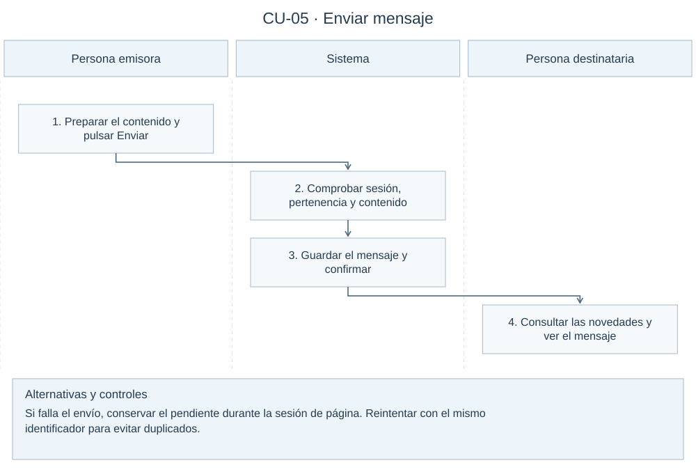
Ampliar el recorridoSi falla el envío, conservar el pendiente durante la sesión de página. Reintentar con el mismo identificador para evitar duplicados.
CU-06 · Recibir mensajes
Participantes: Persona destinataria, Sistema, Persona emisora.

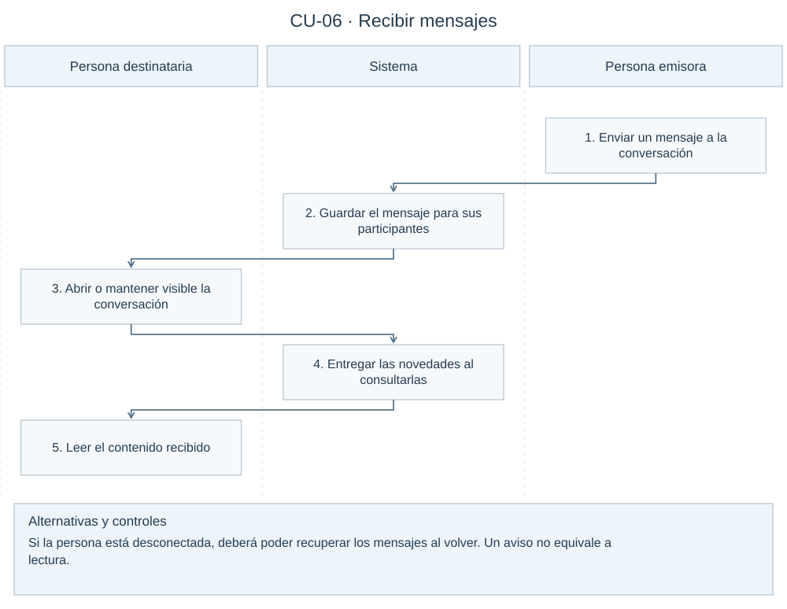
Ampliar el recorridoSi la persona está desconectada, deberá poder recuperar los mensajes al volver. Un aviso no equivale a lectura.
CU-07 · Consultar historial
Participantes: Persona registrada, Sistema.

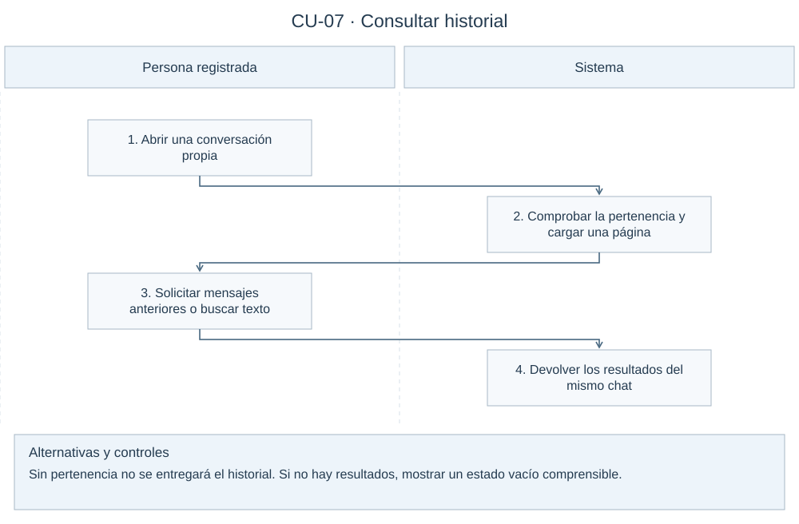
Ampliar el recorridoSin pertenencia no se entregará el historial. Si no hay resultados, mostrar un estado vacío comprensible.
CU-08 · Cerrar sesión
Participantes: Persona registrada, Sistema.

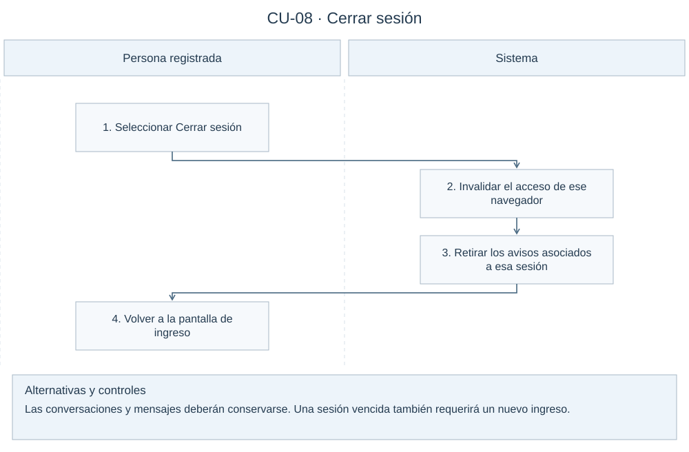
Ampliar el recorridoLas conversaciones y mensajes deberán conservarse. Una sesión vencida también requerirá un nuevo ingreso.
CU-09 · Recuperar contraseña con correo vinculado
Participantes: Persona solicitante, Sistema, Servicio de correo.

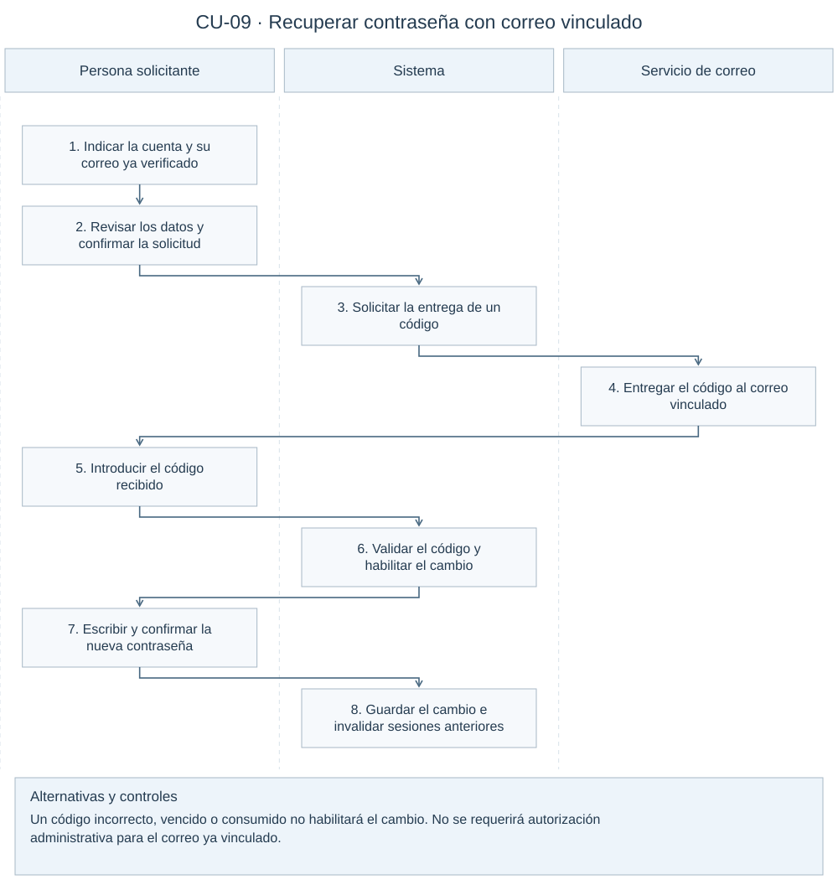
Ampliar el recorridoUn código incorrecto, vencido o consumido no habilitará el cambio. No se requerirá autorización administrativa para el correo ya vinculado.
CU-10 · Recuperar contraseña sin correo vinculado
Participantes: Persona solicitante, Sistema, Responsable, Servicio de correo.

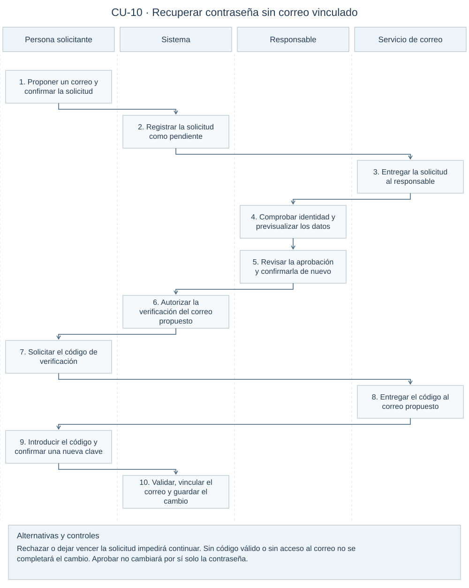
Ampliar el recorridoRechazar o dejar vencer la solicitud impedirá continuar. Sin código válido o sin acceso al correo no se completará el cambio. Aprobar no cambiará por sí solo la contraseña.
CU-11 · Compartir una entrega
Participantes: Persona emisora, Sistema, Participante del chat.

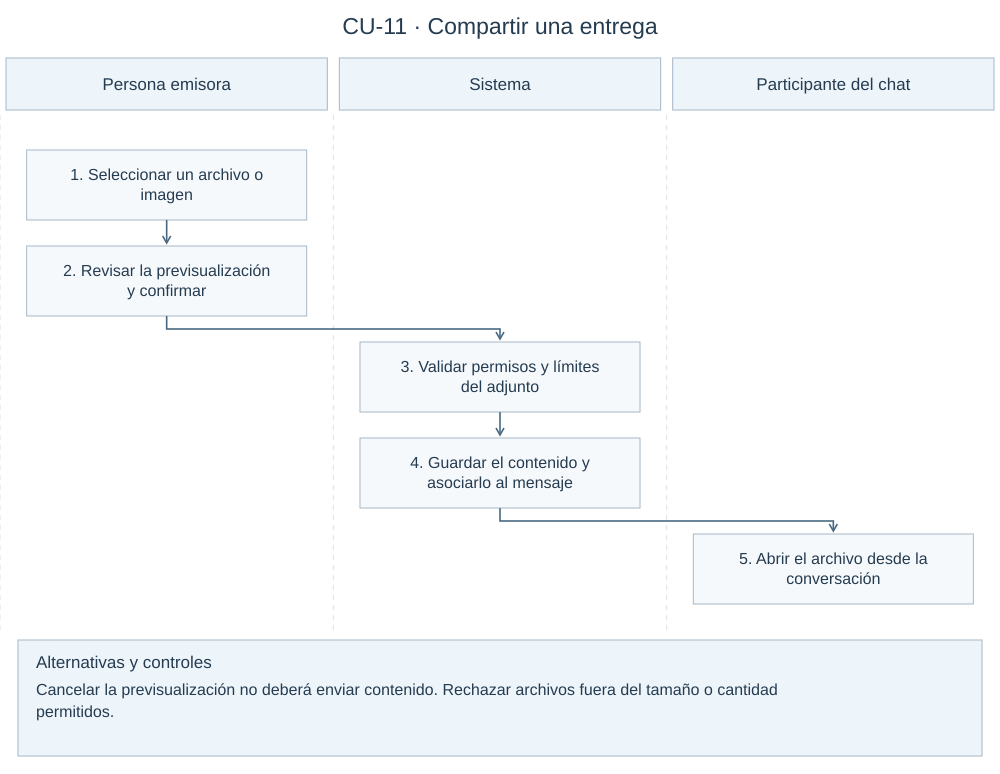
Ampliar el recorridoCancelar la previsualización no deberá enviar contenido. Rechazar archivos fuera del tamaño o cantidad permitidos.
CU-12 · Administrar un grupo
Participantes: Administrador del grupo, Sistema, Participante.

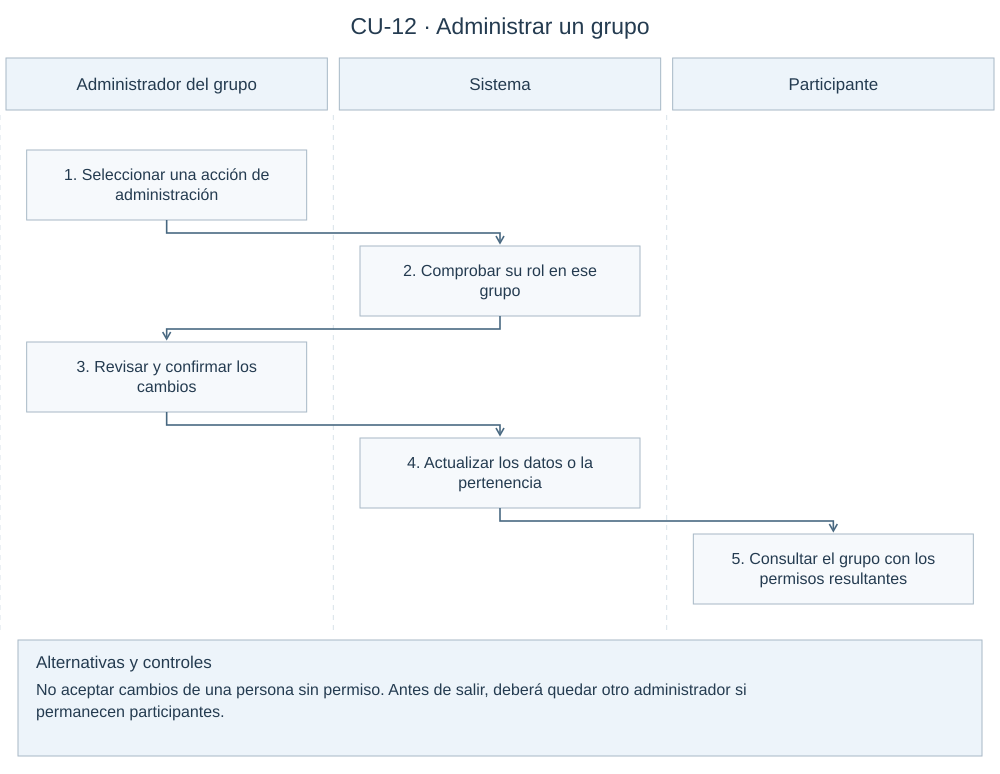
Ampliar el recorridoNo aceptar cambios de una persona sin permiso. Antes de salir, deberá quedar otro administrador si permanecen participantes.
CU-13 · Asignar un nombre privado
Participantes: Persona propietaria, Sistema.

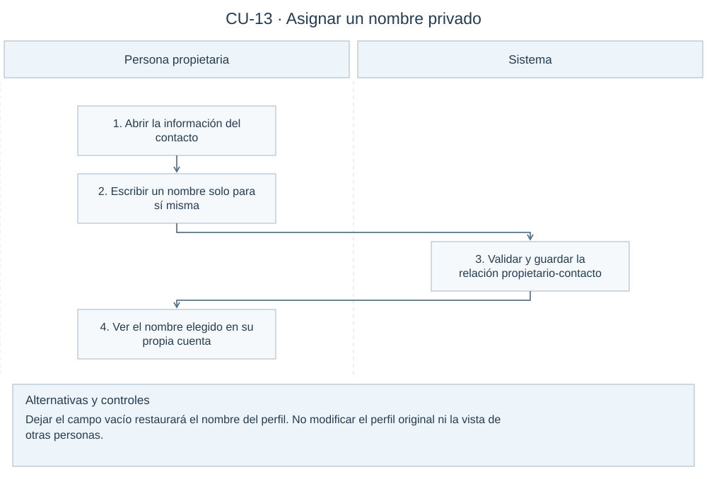
Ampliar el recorridoDejar el campo vacío restaurará el nombre del perfil. No modificar el perfil original ni la vista de otras personas.
Documentos y modelos
Consultar la documentación completa en PDF. Esta página y el documento del paso describen el mismo diseño del sistema.